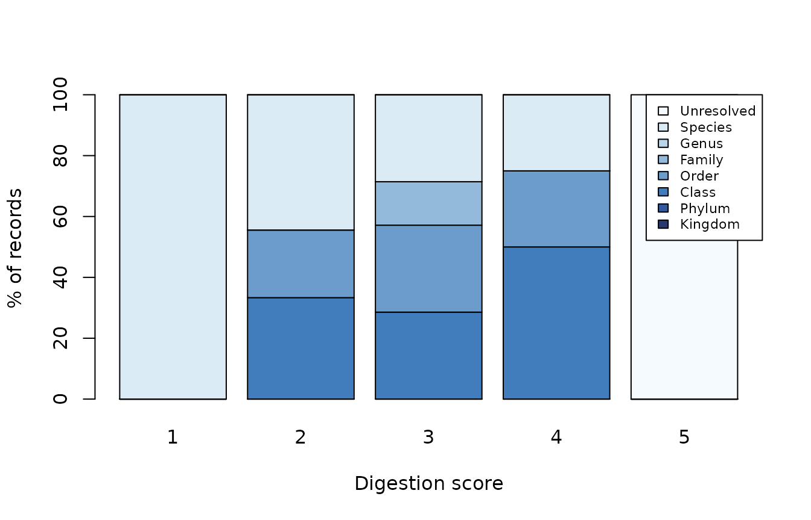

The more digested a prey item, the coarser the rank it can be named
to. That matters because digestion is not even across prey. Soft-bodied
prey lose their identifying features faster than fish with otoliths or
crustaceans with hard parts, so the material that can still be
identified to species is a biased sample of what was eaten. Buckland et
al. (2017) asked diet studies to report how prey condition affected
identification. dv_digestion_diagnostic() gives you that
table.
library(DietView)
dat <- read.csv(system.file("extdata", "dietview_example.csv", package = "DietView"),
na.strings = c("NA", ""))
lin <- read.csv(system.file("extdata", "dietview_example_lineage.csv", package = "DietView"),
na.strings = c("NA", ""))
spec <- dv_spec(predator = "predator_species_common_name", stomach = "stomach_id",
prey_id = "aphia_id", prey_name = "verified_name",
weight = "prey_weight", digestion = "digestion_level_id",
covariates = "period")
prep <- dv_prepare(dat, spec, taxonomy = "table", lineage = lin, verbose = FALSE)What the diagnostic computes
For every record, DietView finds the deepest rank with a name: its finest resolved rank. Records with no name at any rank are “Unresolved”. Within each digestion score it then reports the share of records, and of weight, at each finest rank.
diag <- dv_digestion_diagnostic(prep)
out <- diag[, c("digestion", "finest_rank", "n_records", "p_records", "p_weight")]
out[c("p_records", "p_weight")] <- round(out[c("p_records", "p_weight")], 1)
out
#> digestion finest_rank n_records p_records p_weight
#> 1 1 Species 2 100.0 100.0
#> 2 2 Class 3 33.3 1.4
#> 3 2 Order 2 22.2 0.3
#> 4 2 Species 4 44.4 98.3
#> 5 3 Class 2 28.6 1.0
#> 6 3 Order 2 28.6 2.2
#> 7 3 Family 1 14.3 0.2
#> 8 3 Species 2 28.6 96.6
#> 9 4 Class 2 50.0 80.0
#> 10 4 Order 1 25.0 20.0
#> 11 4 Species 1 25.0 0.0
#> 12 5 Unresolved 2 100.0 100.0Percentages are computed within each digestion score, so each score
adds up to 100% whatever its sample size. Always read them next to
n_records. In this invented example the scores hold 2, 9,
7, 4, 2 records respectively, far too few for any pattern to mean
anything.
Drawing it
m <- xtabs(p_records ~ finest_rank + digestion, data = diag)
barplot(m, col = grDevices::hcl.colors(nrow(m), "Blues"), legend.text = TRUE,
args.legend = list(x = "topright", cex = 0.7, bg = "white"),
xlab = "Digestion score", ylab = "% of records")
How to read it on real data
- If the species share falls steeply with digestion, fine-rank results rest mostly on fresh material. Consider reporting them for scores 1–2 separately, with the sample size you lose by doing so.
- Weight is affected twice: digested prey are both harder to name and lighter. A steep profile is a reason to be cautious with the weight currency in particular.
- Use
by =to check whether the profile differs between strata, for example between periods, when observers or protocols changed between them.
by_period <- dv_digestion_diagnostic(prep, by = "period")
by_period[c("p_records", "p_weight")] <- round(by_period[c("p_records", "p_weight")], 1)
head(by_period, 8)
#> digestion by finest_rank n_records weight p_records p_weight
#> 1 1 2004-2006 Species 1 0.0020 100 100.0
#> 2 1 2018-2019 Species 1 9.0000 100 100.0
#> 3 2 2004-2006 Class 3 0.5128 60 3.8
#> 4 2 2004-2006 Species 2 13.1000 40 96.2
#> 5 2 2018-2019 Order 2 0.1100 50 0.5
#> 6 2 2018-2019 Species 2 22.0500 50 99.5
#> 7 3 2004-2006 Class 2 0.2010 50 3.8
#> 8 3 2004-2006 Family 1 0.0500 25 0.9The diagnostic describes identification; it does not correct for it. The vignette “A known diet” shows, on simulated data where the true diet is known, how much a diet description moves when unidentified material is kept or dropped.